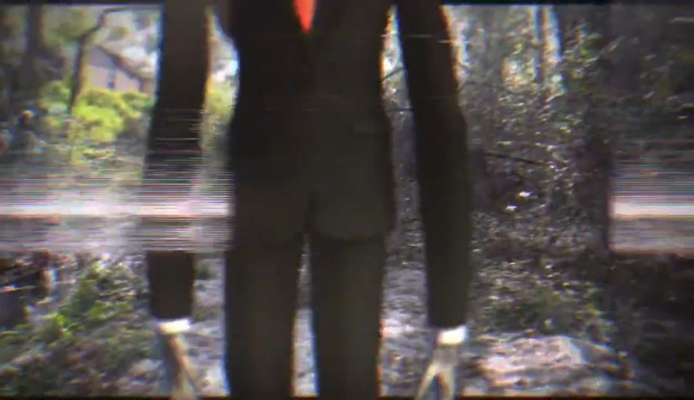

After reviewing Pers0nalPr0ject and seeing how much more Toby has appeared in the series than Slenderman, I was pleasantly surprised to see that this was Slenderman's first real appearance in Pers0nalPr0ject. Without an actor to portray him, or even a mannequin, I used a png image of Slenderman and tracked him into my scenes. Since he always makes the camera go all corrupted, I can cheat the tracking in his scenes, making it feel like he's heavily influencing the footage.
© 2026, Adrian Acosta-Cotto